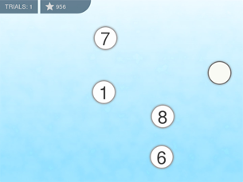

New game to train peripheral vision
Today we release a new game, Coins. It is a trainer to extend peripheral vision, an ability to see objects out of the center of gaze. It's very important skill for drivers and it is required to master speed reading as well. We hope you will enjoy the game!
25 Comments